Báo cáo đề 11 — Cinema 11BÁO CÁO HỌC PHẦN
TRIỂN KHAI VÀ QUẢN TRỊ HỆ THỐNG PHẦN MỀM
ĐỀ 11: HỆ THỐNG ĐẶT VÉ XEM PHIM / SỰ KIỆN
Cinema 11 — Express, MySQL và Docker Compose
[CHƯA CUNG CẤP TRƯỜNG/KHOA]
Sinh viên: Trần Nhật Lệ
Mã sinh viên: DTC245220001 (theo tài khoản GitHub, cần xác nhận)
Lớp: [CHƯA CUNG CẤP LỚP]
Giảng viên: [CHƯA CUNG CẤP GIẢNG VIÊN]
GitHub: https://github.com/dtc245220001-svg
Repository: https://github.com/dtc245220001-svg/LeeCinema
Ngày hoàn thiện nội dung: 22/10/2026
LƯU Ý: Các mục CHƯA CUNG CẤP/CHƯA CÓ phải được bổ sung trước khi nộp.
MỤC LỤC
1. Giới thiệu đề tài và phạm vi 3
2. Yêu cầu và luồng sử dụng 4
3. Kiến trúc và cấu trúc nguồn 5
4. Thiết kế cơ sở dữ liệu 6
5. Backend, API và kiểm tra đầu vào 7
6. Transaction chống đặt trùng ghế 8
7. Frontend, xác nhận và khả năng sử dụng 9
8. Docker Compose, healthcheck và volume 10
9. Nginx reverse proxy và headers 11
10. Prometheus và exporters 12
11. Grafana và dashboard có dữ liệu 13
12. Giám sát tài nguyên container 14
13. Loki, Promtail và log ứng dụng 15
14. LogQL lọc lỗi và xử lý sự cố 16
15. LogQL thống kê theo thời gian 17
16. Hardening và giới hạn quyền 18
17. Kiểm thử tổng hợp và persistence 19
18. Vận hành, làm mới lịch và xử lý lỗi 20
19. Quản lý Git và đối chiếu giai đoạn 21
20. Kịch bản demo, kết luận và tài liệu tham khảo 22
1. Giới thiệu đề tài và phạm vi
Đề tài 11 xây dựng hệ thống đặt vé xem phim với suất chiếu, sơ đồ ghế và thanh toán giả lập. Sản phẩm Cinema 11 được triển khai theo kiến trúc ứng dụng web nhiều dịch vụ: giao diện HTML/CSS/JavaScript thuần, backend Node.js Express, database MySQL và công cụ quản trị phpMyAdmin. Toàn bộ dịch vụ được khai báo bằng Docker Compose, phục vụ mục tiêu học phần Triển khai và Quản trị Hệ thống Phần mềm.
Mục tiêu triển khai là chứng minh một luồng đặt vé thực sự ghi dữ liệu, hoạt động qua Nginx, có giám sát và log tập trung. Giao diện có 12 phim giả định, 5 phòng, 40 ghế mỗi phòng, tìm kiếm và lọc thể loại. Hình minh họa phim được tạo bằng imagegen, lưu WebP nội bộ. Đây là tài nguyên giao diện; các ảnh minh chứng trong báo cáo được chụp từ hệ thống đang chạy, không dùng ảnh tạo sinh để chứng minh kết quả.
Phạm vi không bao gồm thanh toán ngân hàng, gửi email tự động, tài khoản khách hàng, đổi/hủy vé hay vận hành rạp thương mại. Thông báo thanh toán giả lập được hiển thị rõ trước khi xác nhận.
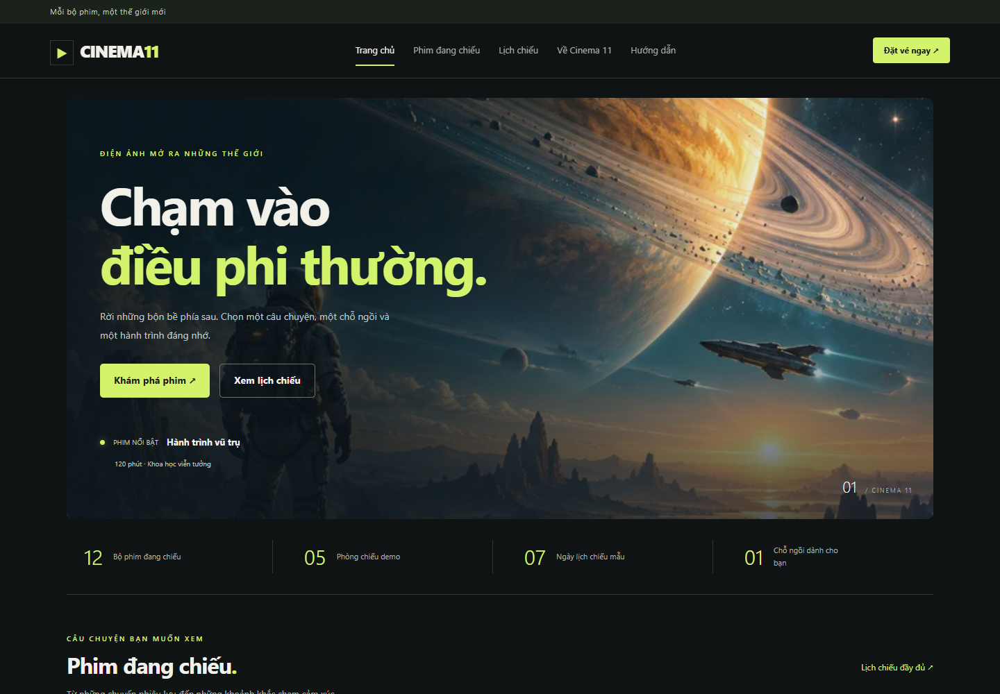
Hình 1. Trang chủ Cinema 11 được chụp trực tiếp từ website qua Nginx.2. Yêu cầu và luồng sử dụng
Luồng chính bắt đầu khi khách chọn phim, đọc mô tả, chọn ngày và suất chiếu tương ứng với phòng, rồi chọn ghế trống. Mỗi lần đặt từ 1 đến 8 ghế. Hệ thống hiển thị giá đơn vị và tổng tiền; khách nhập họ tên và email hợp lệ, xác nhận thanh toán giả lập và nhận mã vé cùng thông tin phim, suất, phòng, ghế và tổng tiền.
Sơ đồ ghế phân biệt trống, đang chọn và đã đặt. Chọn ghế trên giao diện chưa tạo quyền giữ chỗ: ghế chỉ được xác nhận sau khi transaction thành công. Khi ghế bị người khác đặt trước, backend trả HTTP 409 và giao diện tải lại sơ đồ. Các trạng thái tải, lỗi, không tìm thấy phim và không có suất chiếu được hiển thị riêng.
Yêu cầu phi chức năng gồm lưu dữ liệu bền vững, chống trùng ghế khi đồng thời, truy vấn có tham số, không tin giá frontend, responsive và không phụ thuộc ảnh bên ngoài. Yêu cầu triển khai gồm Git, Nginx, metrics container/web/database, log ứng dụng/Nginx và ít nhất 3–4 biện pháp hardening.
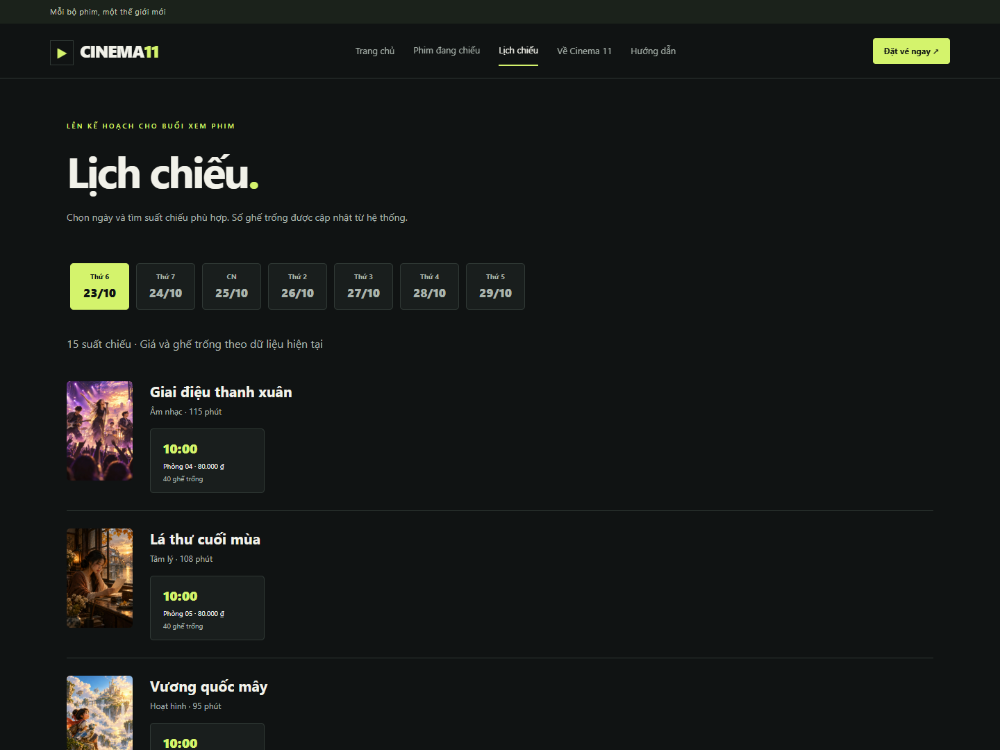
Hình 2. Lịch chiếu thực lấy từ MySQL; chọn một suất sẽ mở đúng ngày/phòng/giờ.3. Kiến trúc và cấu trúc nguồn
Trình duyệt truy cập Nginx trên cổng host 3003; Nginx chuyển tiếp tới app:3001. App truy vấn MySQL qua tên dịch vụ db, không kết nối cổng database trên Windows. phpMyAdmin truy cập cùng database trong mạng Docker. Cổng 3001 từng được một tiến trình Node khác sử dụng nên chủ dự án chọn 3003; Grafana cũ ở 3000 không bị dừng.
Mạng frontend chứa tuyến web và các exporter cần được Prometheus truy cập. Mạng database được đặt internal, chỉ các dịch vụ liên quan database tham gia; MySQL không publish cổng host. Mạng monitoring phục vụ Prometheus, Grafana, Loki và Promtail. App nối frontend và database; phpMyAdmin cũng nối hai mạng để phục vụ quản trị cục bộ.
Source chính gồm server.js, public/, database/, nginx/, monitoring/, scripts/, tests/ và docs/. Ba file Compose được ghép bằng scripts/stack.ps1. Tách file nền, metrics và log giúp đối chiếu ba mốc commit mà vẫn chạy toàn bộ hệ thống bằng một lệnh.
Trình duyệt → Nginx → Express → MySQL
Prometheus ← exporters (Nginx / MySQL / cAdvisor)
Grafana → Prometheus và Loki ← Promtail ← log volumes
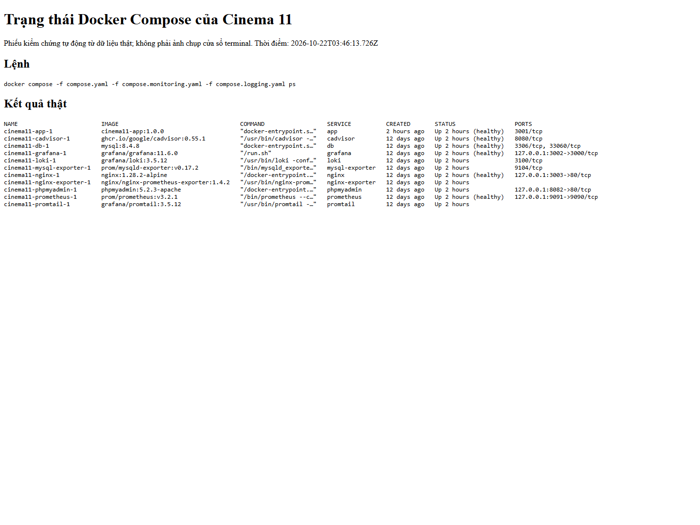
Hình 3. Phiếu kiểm chứng trạng thái thực của riêng project cinema11; dữ liệu lấy từ docker compose ps.4. Thiết kế cơ sở dữ liệu
Database cinema có sáu bảng InnoDB. movies lưu tên, thể loại, thời lượng, mô tả và poster. rooms lưu phòng; seats lưu hàng và số ghế thuộc phòng. showtimes liên kết phim, phòng, thời điểm bắt đầu và giá vé. bookings lưu mã đơn, suất chiếu, khách hàng, tổng tiền và trạng thái simulated. booking_seats lưu các ghế của một đơn cùng giá đơn vị.
Các khóa ngoại ràng buộc phim/phòng/ghế/suất/đơn. UNIQUE(room_id,row_label,seat_number) bảo vệ tọa độ ghế; UNIQUE(room_id,starts_at) ngăn trùng giờ bắt đầu của phòng. UNIQUE(showtime_id,seat_id) là ràng buộc quan trọng để một ghế không thuộc hai đơn trong cùng suất. Khóa ngoại ghép (booking_id,showtime_id) bảo đảm chi tiết ghế thống nhất với suất của đơn.
CHECK kiểm tra các đại lượng dương như thời lượng, giá và tổng tiền. Script init dùng SET NAMES utf8mb4 để tránh lỗi dấu tiếng Việt. Dữ liệu mới có 12 phim, 200 ghế và 105 suất trong bảy ngày tiếp theo; volume đã sử dụng có thể có thêm suất lịch sử. Backend kiểm tra thêm ghế thuộc đúng phòng; không tuyên bố mọi quy tắc nghiệp vụ đều được bao phủ bằng FK.
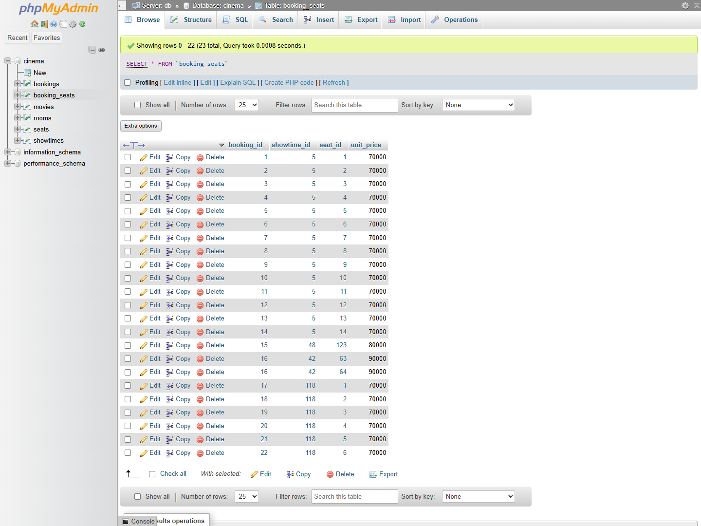
Hình 4. Bảng booking_seats trong phpMyAdmin, thể hiện các chi tiết ghế thực đã ghi.5. Backend, API và kiểm tra đầu vào
GET /api/movies hỗ trợ tìm tên bằng tham số q; GET /api/movies/:id/showtimes trả lịch còn hiệu lực; GET /api/showtimes cung cấp lịch tổng hợp trong 14 ngày tiếp theo cùng số ghế trống. GET /api/showtimes/:id/seats trả sơ đồ ghế và trạng thái đã đặt. GET /api/health thực hiện SELECT 1 để kiểm tra kết nối MySQL, thay vì chỉ trả chuỗi cố định.
POST /api/bookings nhận showtimeId, seatIds, name và email. Backend kiểm tra ID nguyên, mảng ghế duy nhất với 1–8 phần tử, họ tên sau trim dài 2–100 ký tự và email hợp lệ dài tối đa 254 ký tự. Ghế sai phòng hoặc dữ liệu sai trả 400; suất không còn khả dụng trả 404; ghế bị chiếm trả 409; lỗi dịch vụ trả thông báo chung 503.
mysql2/promise sử dụng connection pool và execute với dấu hỏi giữ chỗ. Danh sách IN được tạo từ số phần tử đã kiểm tra và mọi ID vẫn được truyền dưới dạng tham số. Backend không lấy total hoặc đơn giá do client gửi. Express giới hạn JSON 16 KB; frontend hiển thị lỗi bằng textContent để tránh diễn giải nội dung nhận được thành HTML.
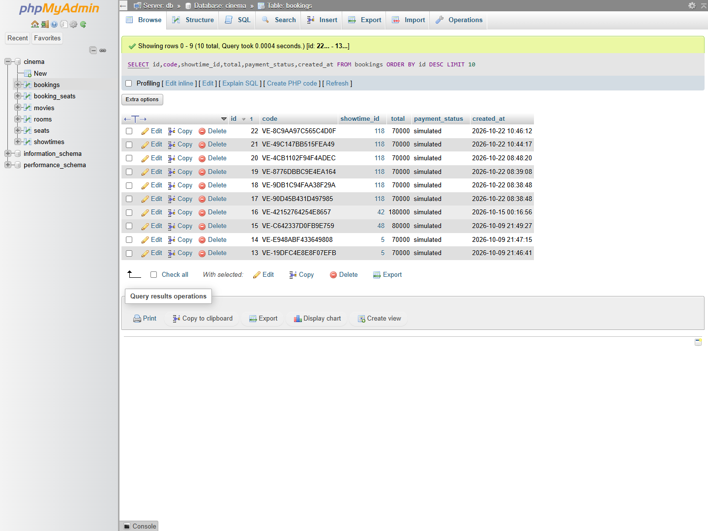
Hình 5. Đơn thực trong phpMyAdmin; thanh toán được ghi nhận là simulated.6. Transaction chống đặt trùng ghế
Mỗi yêu cầu đặt vé lấy một connection, bắt đầu transaction và SELECT suất chiếu FOR UPDATE. Khóa dòng này tuần tự hóa các yêu cầu cùng suất. Sau khi lấy được khóa, backend kiểm tra suất chưa bắt đầu, các ghế thuộc phòng và chưa xuất hiện trong booking_seats. Tổng tiền được tính từ giá của suất trong database nhân số ghế hợp lệ.
Backend tạo mã VE- bằng dữ liệu ngẫu nhiên, INSERT bookings, INSERT từng booking_seats rồi COMMIT. Nếu bất kỳ bước nào thất bại, toàn bộ transaction được ROLLBACK và connection được giải phóng. UNIQUE(showtime_id,seat_id) bảo vệ ở tầng database ngay cả khi đường ghi khác bỏ qua logic kiểm tra. Lỗi ER_DUP_ENTRY được chuyển thành phản hồi 409.
Kiểm thử gửi hai request đồng thời cùng ghế đã quan sát đúng một HTTP 201 và một HTTP 409. Kiểm thử nhóm nhiều ghế có một ghế bị chiếm xác minh ghế còn lại không bị ghi dở dang. Cách khóa theo suất đơn giản, phù hợp demo; khi cần thông lượng rất cao có thể nghiên cứu khóa theo ghế và cơ chế giữ ghế có thời hạn.
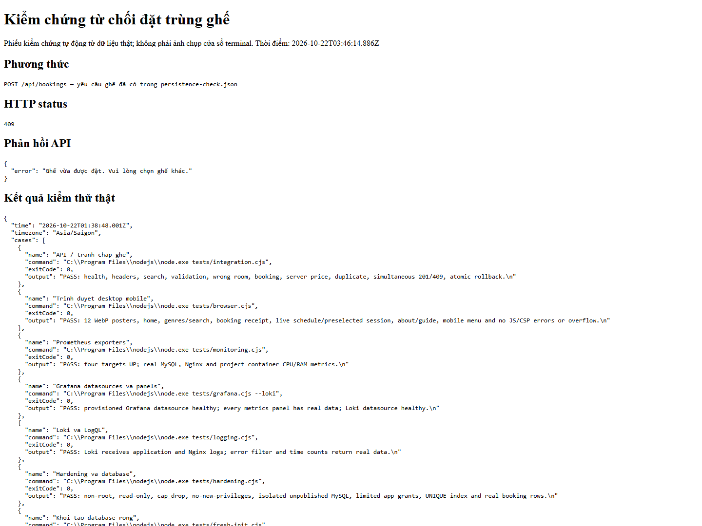
Hình 6. Phản hồi 409 thực và kết quả kiểm thử tranh chấp; đây là phiếu kết quả tự động, không giả ảnh terminal.7. Frontend, xác nhận và khả năng sử dụng
Giao diện tiếng Việt gồm Trang chủ, Phim đang chiếu, Lịch chiếu, Về Cinema 11 và Hướng dẫn. Điều hướng hash không cần server-side router. Trang phim có tìm tên, lọc thể loại; lịch chiếu nhóm theo ngày/phim, hiển thị phòng, giờ, giá và số ghế trống. Menu chuyển sang dạng thu gọn trên điện thoại.
Form đặt vé sử dụng sơ đồ 8 cột, tối đa 8 ghế, cập nhật tổng tiền khi chọn. Sau xác nhận, giao diện hiển thị mã vé, phim, thời điểm, phòng, danh sách ghế và tổng tiền do server trả về. Hệ thống không gửi email trong phạm vi hiện tại; hướng dẫn yêu cầu khách lưu thông tin trên màn hình. Nút đặt vé giữ nền vàng xanh theo lựa chọn cuối cùng của người dùng.
Playwright điều khiển Edge headless ở desktop 1440 px và mobile 390 px để kiểm tra ảnh WebP, bộ lọc, tìm kiếm, đặt vé, lịch chọn sẵn đúng suất, các trang nội dung, menu mobile và tràn ngang. Không dùng localStorage thay database. Ảnh xác nhận dưới đây phát sinh từ một đơn demo thực.
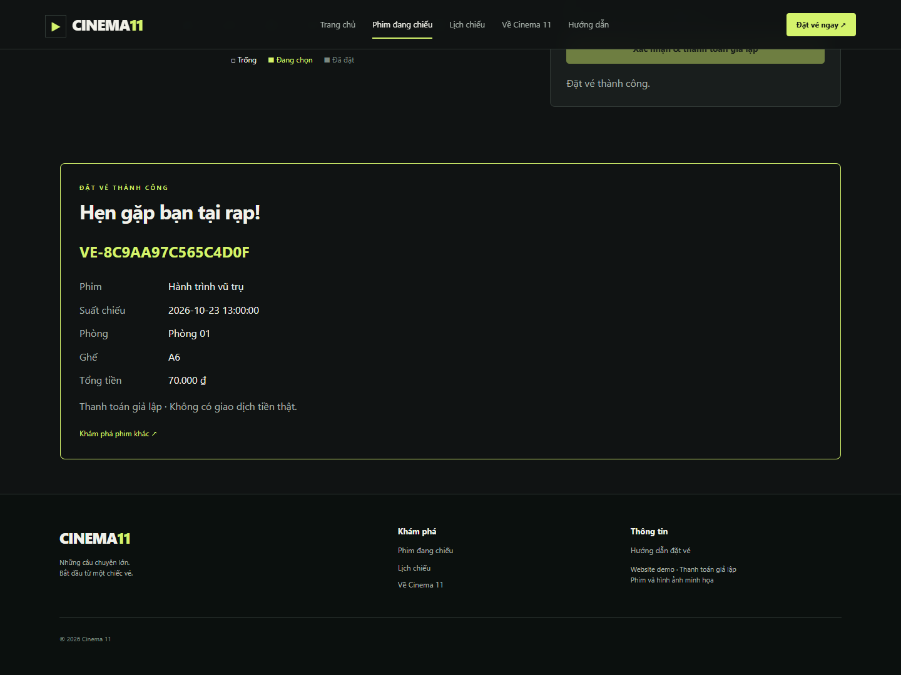
Hình 7. Thông tin mã vé và thanh toán giả lập sau một lượt đặt vé thật.8. Docker Compose, healthcheck và volume
Dockerfile pin Node 24.14.0 Alpine, cài dependency bằng npm ci --omit=dev và chạy USER node. Compose nền gồm app, MySQL 8.4.8, phpMyAdmin 5.2.3 và Nginx 1.28.2. Các phiên bản còn lại được pin trong compose.monitoring.yaml và compose.logging.yaml; không dùng tag latest cho dịch vụ tải từ registry.
MySQL có healthcheck truy vấn SELECT 1; app chỉ khởi động sau khi db healthy và có healthcheck dựa vào API kết nối database. Nginx đợi app healthy. Prometheus và Grafana có healthcheck riêng; không đồng nhất mọi container đang Running với việc đã kiểm chứng đầy đủ chức năng. scripts/verify.cjs bổ sung kiểm tra HTTP, datasource, metrics và log thực.
Volume lưu database, app logs, Nginx logs, Prometheus, Grafana, Loki và positions của Promtail. down giữ volume; down -v xóa dữ liệu. Phải dùng đầy đủ ba file Compose hoặc stack.ps1 để quản lý toàn stack, tránh bỏ sót dịch vụ giám sát. Không dừng/xóa container của dự án khác.
Hình 8. Các dịch vụ chạy dưới project riêng cinema11, không trùng tên stack khác.9. Nginx reverse proxy và headers
Nginx là điểm truy cập website. location / chuyển tiếp tới app:3001 và đặt Host, X-Forwarded-Proto. Docker DNS 127.0.0.11 được cấu hình resolve lại mỗi 10 giây để giảm lỗi upstream cũ sau khi app được tạo lại. Giới hạn body 16 KB đồng bộ với Express; timeout kết nối và đọc giúp tránh request treo quá lâu.
Các headers gồm X-Content-Type-Options: nosniff, X-Frame-Options: DENY, Referrer-Policy: no-referrer, Permissions-Policy và Content-Security-Policy chỉ cho tài nguyên cùng nguồn. CSP không cho frame, giới hạn script/style/image/connect. Website demo dùng HTTP localhost. Tài liệu đề cho phép HTTPS tự ký hoặc headers cơ bản; headers đã được áp dụng, chưa tuyên bố có HTTPS.
Access log Nginx là JSON, ghi thời gian, method, URI không query, status và duration. Không ghi request body, cookie, authorization hoặc IP trong access log. Endpoint stub_status phục vụ exporter nội bộ, không mở tự do ra host. Khi đưa hệ thống ra Internet cần TLS, kiểm soát truy cập quản trị và chính sách log phù hợp.
resolver 127.0.0.11 valid=10s;
set $app_backend http://app:3001;
location / { proxy_pass $app_backend; }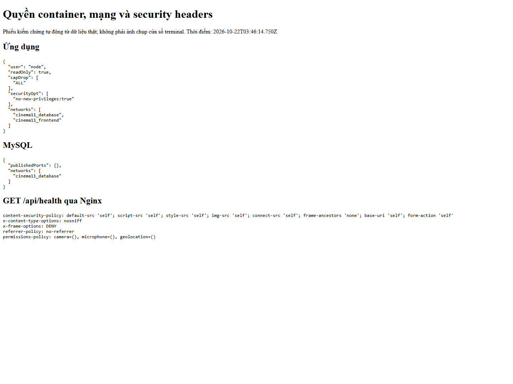
Hình 9. Security headers nhận từ Nginx cùng thông tin quyền/mạng lấy từ Docker inspect.10. Prometheus và exporters
Prometheus scrape bốn jobs: chính Prometheus, nginx-exporter, mysql-exporter và cAdvisor. nginx-exporter đọc stub_status; mysql-exporter dùng tài khoản exporter riêng để lấy trạng thái MySQL; cAdvisor cung cấp CPU, RAM và một số số liệu container. Scrape interval 15 giây, dữ liệu Prometheus giữ bảy ngày.
Bốn targets UP cho biết các endpoint metrics được scrape thành công. Các chỉ số nghiệp vụ hạ tầng cần xem thêm gồm nginx_up=1, mysql_up=1, nginx_http_requests_total và mysql_global_status_queries. rate trên khoảng một phút cần ít nhất hai mẫu. Việc tải trang và đặt vé tạo hoạt động để biểu đồ có dữ liệu từ hệ thống, không điền số giả.
cAdvisor chạy privileged và đọc mount/socket Docker: đây là ngoại lệ cần nêu rõ trong hardening. Prometheus dùng metric relabel để lưu container metrics chỉ cho project cinema11. Docker Desktop cung cấp số liệu container trong Linux VM, không đại diện toàn bộ hệ điều hành Windows. Không lấy số liệu root cgroup giả làm số liệu từng dịch vụ.
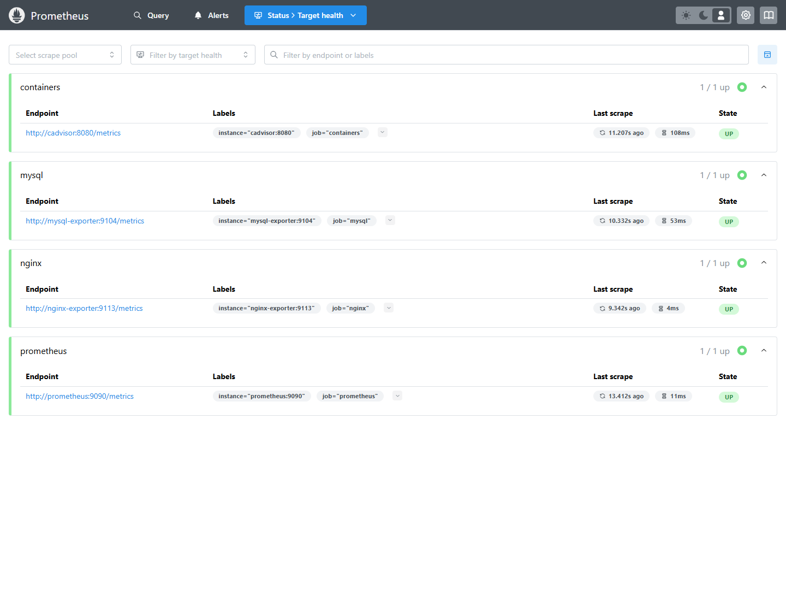
Hình 10. Trang Targets của Prometheus với trạng thái scrape thực tế.11. Grafana và dashboard có dữ liệu
Grafana 11.6.0 được provision datasource Prometheus và Loki từ file YAML; dashboard JSON được mount read-only. Dashboard Cinema 11 có trạng thái MySQL/Nginx, số targets UP, requests/giây, queries/giây, kết nối hiện tại và biểu đồ CPU/RAM theo nhãn dịch vụ Compose.
tests/grafana.cjs gọi health của datasource và truy vấn từng biểu thức panel qua proxy Grafana, yêu cầu có kết quả thực. tests/monitoring.cjs kiểm tra targets, chỉ số up và chuỗi CPU/RAM project. Kiểm tra API giúp tránh chỉ nhìn một khung dashboard chưa có dữ liệu. Ảnh dưới đây bổ sung bằng chứng từ giao diện Grafana đang chạy.
CPU rate có đơn vị lõi CPU sử dụng, không tự suy ra phần trăm host; RAM working set tính theo byte và được Grafana định dạng. Khi quan sát biểu đồ cần ghi khoảng thời gian, refresh và hoạt động tạo tải. Không dùng vài request demo để khẳng định SLA hoặc khả năng chịu tải production.
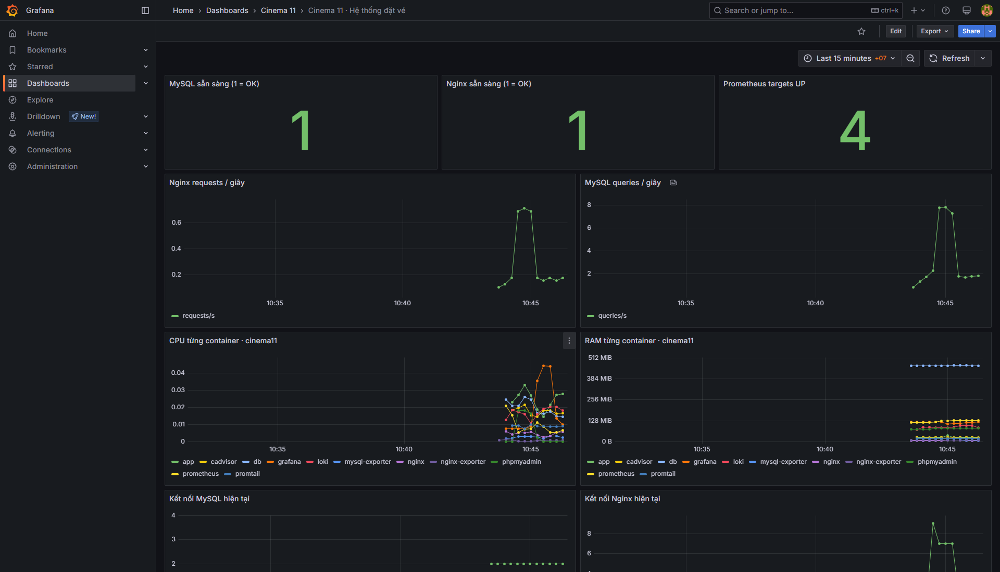
Hình 11. Dashboard Grafana hiển thị các chỉ số thực của web server và database.12. Giám sát tài nguyên container
Hai panel CPU và RAM nhóm theo container_label_com_docker_compose_service. CPU dùng rate(container_cpu_usage_seconds_total[1m]); RAM dùng container_memory_working_set_bytes. Điều kiện container_label_com_docker_compose_project="cinema11" bảo đảm biểu đồ tương ứng project này khi Docker Desktop đồng thời chạy stack khác.
So sánh biến động trước/sau thao tác đặt vé chỉ là quan sát minh họa. MySQL và app có thể tăng hoạt động khi truy vấn; exporters, healthcheck và Prometheus cũng tạo tải nền. Do đó báo cáo không gán mọi biến động cho thao tác khách hàng, không bịa số benchmark hoặc mức tiết kiệm tài nguyên.
Nếu không có nhãn container hoặc panel rỗng, kiểm tra cAdvisor logs, tương thích Docker API, quyền đọc socket và mount Linux VM. Phiên bản cAdvisor 0.55.1 đã cung cấp chuỗi metrics trong môi trường kiểm tra này. Các exporter không được publish cổng host; Prometheus truy cập chúng trong mạng Docker.
 Hình 12. CPU/RAM theo dịch vụ cinema11 từ cAdvisor, quan sát trong Grafana.
Hình 12. CPU/RAM theo dịch vụ cinema11 từ cAdvisor, quan sát trong Grafana.13. Loki, Promtail và log ứng dụng
Loki và Promtail pin cặp phiên bản 3.5.12. Promtail đọc file ứng dụng và Nginx từ volume read-only, ghi positions vào volume riêng rồi gửi tới Loki qua mạng monitoring. Không cần mount Docker socket để thu log. Loki dùng TSDB schema v13, filesystem và compactor retention bảy ngày; không publish cổng host.
Nhãn cố định gồm project="cinema11", service="app" hoặc service="nginx"; app có nhãn level, Nginx có stream access/error. Log app là JSON chứa time, level, method, path, status, duration_ms và các sự kiện nội bộ. Không ghi payload khách hàng, tên, email hay mật khẩu vào log ứng dụng. Không gắn booking code hoặc email thành nhãn có cardinality cao.
Promtail đã hết hỗ trợ từ 02/03/2026. Thành phần được giữ theo yêu cầu bài tập; hướng triển khai thực tế là Grafana Alloy. Đây là giới hạn đã công bố, không coi cấu hình học tập là cấu hình production. Truy vấn bên dưới dùng đúng nhãn của pipeline hiện tại.
{project="cinema11",service="app"} | json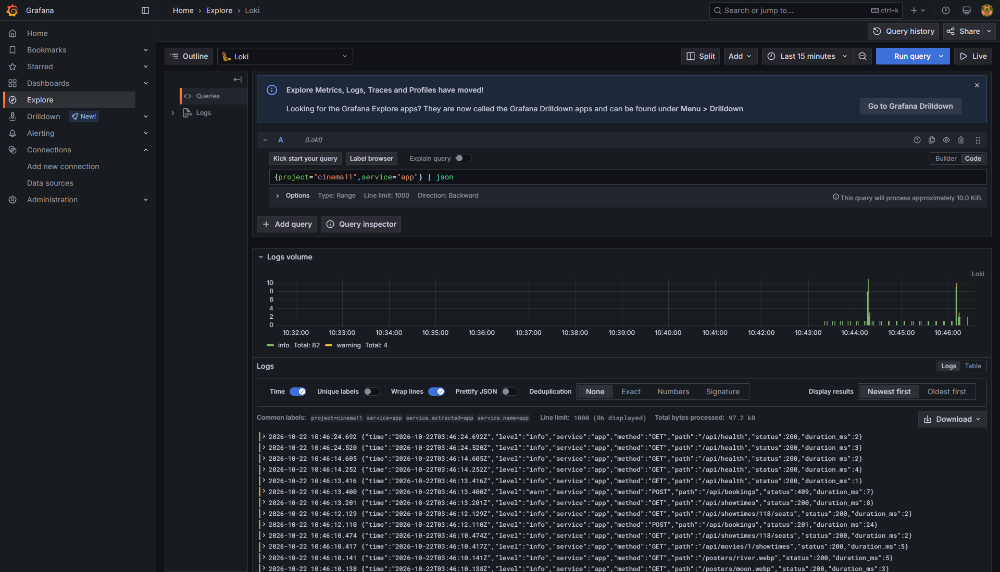
Hình 13. Grafana Explore: truy vấn log ứng dụng, kèm khoảng thời gian và kết quả.14. LogQL lọc lỗi và xử lý sự cố
Một request nhập sai dữ liệu trả 400 là lỗi yêu cầu của người dùng; ghế trùng trả 409 là xung đột nghiệp vụ; 5xx biểu thị lỗi dịch vụ. Truy vấn parse JSON rồi lọc status>=400 giúp xem cả ba nhóm HTTP bất thường. Nếu chỉ cần sự kiện lỗi nội bộ có thể lọc nhãn level="error".
Để có minh chứng có thể lặp lại, kiểm thử gửi payload rỗng hoặc thử đặt ghế đã được đặt, rồi kiểm tra log. Không cố tình tắt database hoặc đưa mật khẩu vào URL để tạo lỗi. Log error-level có thể không tồn tại khi hệ thống bình thường; không tự tạo dòng log giả để làm dashboard trông đầy đủ.
Khi điều tra 503, dùng thời gian, method/path, status và mã lỗi an toàn trong app logs, đối chiếu health database. Khi 409, giao diện tải lại sơ đồ và yêu cầu chọn ghế khác. Ảnh Explore phải giữ nguyên câu truy vấn và khoảng thời gian quan sát để người chấm hiểu nguồn kết quả.
{project="cinema11",service="app"} | json | status >= 400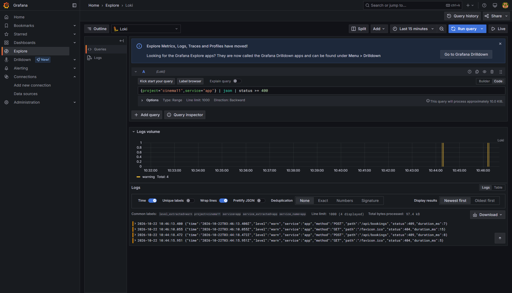
Hình 14. Grafana Explore lọc HTTP 4xx/5xx phát sinh từ các yêu cầu kiểm thử thật.15. LogQL thống kê theo thời gian
count_over_time đếm số dòng log trong cửa sổ một phút; sum by(service) nhóm kết quả theo ứng dụng và Nginx. Truy vấn này minh họa tần suất log trong khoảng thời gian đã chọn, không phải số đơn đặt vé. Healthcheck cũng ghi log nên lưu lượng nền có thể xuất hiện ngay khi không có khách thao tác.
Ba truy vấn trong báo cáo đáp ứng ba nhóm đề yêu cầu: xem log ứng dụng, lọc lỗi và thống kê theo thời gian. Có thể bổ sung selector service="nginx", stream="access" để quan sát proxy hoặc lọc status>=400 trên access log JSON. tests/logging.cjs yêu cầu app, Nginx, bộ lọc lỗi và thống kê đều trả dữ liệu.
Positions giúp Promtail tiếp tục đọc sau restart; Loki data volume giữ chunks/index. Retention Loki không tự xoay file nguồn trong app_logs/nginx_logs, vì vậy vận hành dài hạn cần thêm log rotation và cảnh báo dung lượng. Chưa thử nghiệm đủ bảy ngày để xác nhận thực nghiệm chính sách retention.
sum by (service) (count_over_time({project="cinema11"}[1m]))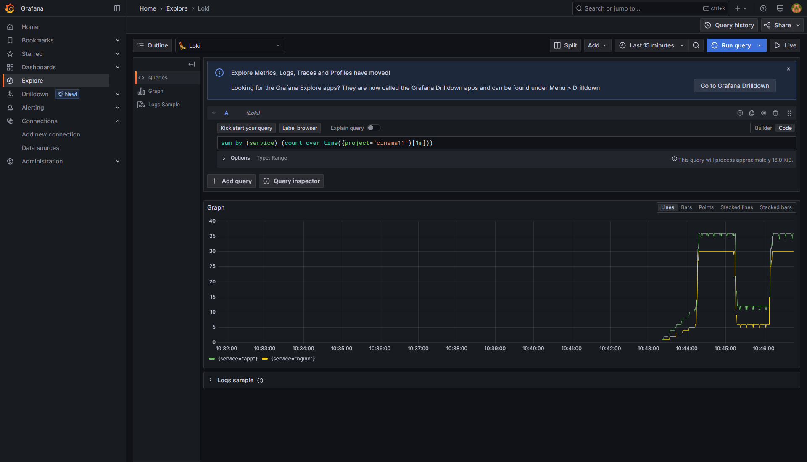
Hình 15. Biểu đồ số dòng log theo service trong Grafana Explore.16. Hardening và giới hạn quyền
Biện pháp thứ nhất: app chạy USER node (UID 1000), root filesystem read-only, chỉ ghi vào volume log và tmpfs /tmp. cap_drop ALL và no-new-privileges giảm quyền hệ điều hành. Biện pháp thứ hai: mạng database internal và MySQL không publish cổng host; dịch vụ quản trị và web chỉ bind 127.0.0.1 trong cấu hình demo.
Biện pháp thứ ba: mật khẩu ngẫu nhiên được script tạo bằng nguồn mật mã, lưu .env và exporter.cnf bị Git bỏ qua; có .env.example để mô tả biến. Không chụp hoặc commit mật khẩu/token. Biện pháp thứ tư: app dùng cinema_app, có SELECT/INSERT và UPDATE chỉ showtimes phục vụ FOR UPDATE, không dùng root hay GRANT OPTION.
Biện pháp thứ năm là security headers Nginx. Kiểm thử hardening dùng Docker inspect và SHOW GRANTS, kiểm tra UNIQUE và số bản ghi thực; không kết luận chỉ từ file cấu hình. cAdvisor privileged là ngoại lệ đã giải thích. HTTP localhost, phpMyAdmin và Grafana chưa có cơ chế truy cập Internet an toàn nên không công khai nguyên cấu hình này.
Hình 16. Phiếu kiểm chứng thực: non-root, read-only, capabilities, mạng, cổng MySQL và headers.17. Kiểm thử tổng hợp và persistence
scripts/verify.cjs chạy các nhóm kiểm tra tuần tự và lưu stdout, exit code, thời gian vào docs/evidence/test-results.json. Nhóm API kiểm tra health, tìm kiếm, validation, ghế sai phòng, giá do server tính, mã vé, xung đột và atomic rollback. Nhóm trình duyệt thao tác Edge desktop/mobile và chụp website thật.
Nhóm giám sát kiểm tra bốn targets UP, metrics web/DB/container và từng panel qua datasource Grafana. Nhóm log kiểm tra kết quả LogQL. Nhóm init tạo MySQL tạm với volume riêng để xác nhận seed UTF-8, 105 suất, 200 ghế và quyền khóa dòng; container tạm tự dọn mà không tác động volume chính.
Cuối chuỗi, chỉ db/app/Nginx của cinema11 được restart; sau khi healthy, test persistence đọc lại đúng ghế của mã đơn đã lưu. Kết quả phiên chạy hiện tại: mọi trường hợp đạt. Đây là kiểm thử chức năng và restart, chưa phải thử tải, mất điện, lỗi ổ đĩa hay phục hồi thảm họa.
PASS | API / tranh chap ghe
PASS | Trinh duyet desktop mobile
PASS | Prometheus exporters
PASS | Grafana datasources va panels
PASS | Loki va LogQL
PASS | Hardening va database
PASS | Khoi tao database rong
PASS | Restart rieng dich vu du an
PASS | Cho dich vu healthy
PASS | Du lieu sau restart
Hình 17. Kết quả kiểm thử thật; bản đầy đủ nằm trong test-results.json.18. Vận hành, làm mới lịch và xử lý lỗi
Tại PowerShell ở thư mục dự án, chạy setup.ps1 một lần để tạo bí mật, stack.ps1 up để build/khởi động, stack.ps1 ps để kiểm tra. Website qua Nginx ở localhost:3003 trong phiên này; phpMyAdmin 8082, Grafana 3002 và Prometheus 9091. Cổng mặc định trong ví dụ môi trường có thể khác, cần kiểm tra trước khi dùng.
Seed chỉ chạy khi database rỗng, nên lịch mẫu sẽ hết hạn khi demo sau nhiều ngày. refresh-showtimes.ps1 bổ sung bảy ngày kế tiếp theo giờ database, dùng INSERT IGNORE để giữ nguyên suất và vé cũ. Trong phiên hoàn thiện đã phát hiện lịch cũ hết hạn và bổ sung lịch mới trước khi test; không xóa volume để làm mới.
Dừng toàn hệ thống bằng stack.ps1 down giữ dữ liệu. Không dùng down -v khi cần giữ vé. Với lỗi cổng, đổi biến *_PORT thay vì dừng stack khác; với lỗi mật khẩu, nhớ đổi .env không tự sửa tài khoản đã tồn tại trong volume. Xem logs và health trước khi kết luận dịch vụ hỏng.
powershell -ExecutionPolicy Bypass -File scripts/setup.ps1
powershell -ExecutionPolicy Bypass -File scripts/stack.ps1 up
powershell -ExecutionPolicy Bypass -File scripts/refresh-showtimes.ps1
node scripts/verify.cjs
powershell -ExecutionPolicy Bypass -File scripts/stack.ps1 down
19. Quản lý Git và đối chiếu giai đoạn
Ba commit chính đã tồn tại theo đúng tiến trình: triển khai ứng dụng/MySQL/Nginx; bổ sung Prometheus/Grafana; bổ sung Loki/Promtail/LogQL. Không viết lại lịch sử chỉ để đổi câu chữ commit. Các phần thêm phim, poster, trang chủ và bộ hồ sơ có thể được ghi trong commit hoàn thiện riêng vì tài liệu cho phép nhiều hơn ba commit.
Tài khoản GitHub được người dùng cung cấp: https://github.com/dtc245220001-svg. Repository đã tạo: https://github.com/dtc245220001-svg/LeeCinema. Mã nguồn chưa push vì kiểm duyệt tự động yêu cầu người dùng duyệt payload công khai. Chỉ ghi đã publish sau khi remote đúng và push được xác minh. Bí mật không được đưa vào commit; ảnh minh chứng và báo cáo cần có trong source nộp hoặc có liên kết truy cập được.
Đối chiếu bảy giai đoạn: chuẩn bị source/GitHub; chức năng và DB; Docker/Nginx; metrics; log; hardening/kiểm thử; báo cáo/demo. Phần kỹ thuật có file và kết quả trong workspace. Thông tin bìa, URL repository hoặc ảnh GitHub còn thiếu được đánh dấu công khai để không làm người đọc hiểu nhầm hồ sơ đã đủ điều kiện nộp.
648532d feat: booking website, MySQL transactions and Docker Nginx deployment
3c10d96 feat: provision Prometheus Grafana and real container Nginx MySQL metrics
7b53b84 feat: centralize Loki Promtail logs and complete verified demo documentation
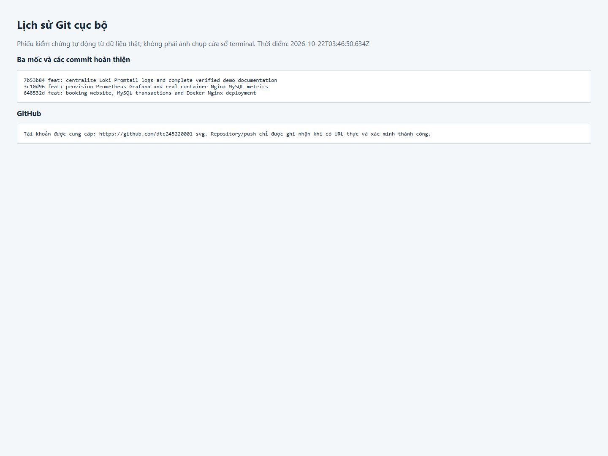
Hình 18. Lịch sử Git cục bộ; không dùng ảnh này thay cho minh chứng repository đã công khai.20. Kịch bản demo, kết luận và tài liệu tham khảo
Thứ tự demo theo đề: khởi động bằng Docker Compose; đặt vé qua Nginx; xem đơn và chi tiết ghế trong phpMyAdmin; mở dashboard Grafana; chạy ba LogQL; giải thích hardening; trình bày GitHub/README. Cần đọc được mã vé, thời gian, suất và ghế trên các ảnh, không chỉ chụp giao diện không có dữ liệu.
Kết quả đạt trong môi trường kiểm tra: website hoạt động, transaction ngăn trùng ghế, lưu MySQL và giữ dữ liệu sau restart; metrics và log truy vấn được; frontend responsive. Các giới hạn gồm thanh toán giả lập, không gửi email, không đổi/hủy, không xác thực khách, chưa thử tải lớn, chưa backup/restore, chưa TLS production và Promtail EOL. Hướng phát triển: Alloy, TLS, quản trị truy cập, backup/restore và kiểm thử tải.
Tham khảo chính thức: Docker Compose (docs.docker.com/compose/), MySQL 8.4 InnoDB locking (dev.mysql.com/doc/refman/8.4/en/innodb-locking-reads.html), Express (expressjs.com), Prometheus (prometheus.io/docs/), mysqld_exporter (github.com/prometheus/mysqld_exporter), cAdvisor (github.com/google/cadvisor), Grafana Loki/Promtail (grafana.com/docs/loki/latest/send-data/promtail/). Kết quả và hình trong báo cáo lấy từ lần chạy 22/10/2026; nguồn được liệt kê để người đọc tra cứu, không thay thế kết quả kiểm chứng.